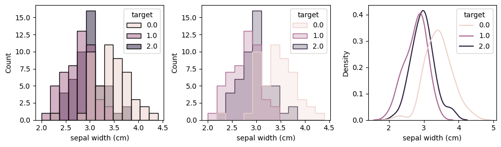

Dataframe
Contents
统计与大数据分析
常见数据格式和处理
肖朦，2023
Dataframe#
表格
读入和写出
处理csv,xls,json,sql
创建表格#
import pandas as pd
pd.options.mode.chained_assignment = None
l1=[1,2,3,4]
l2=[7,8,9,10]
l3=['qw','er','tyui','asdf']
dict3={'a':l1,'b':l2,'c':l3}
df = pd.DataFrame(dict3)
df
| a | b | c | |
|---|---|---|---|
| 0 | 1 | 7 | qw |
| 1 | 2 | 8 | er |
| 2 | 3 | 9 | tyui |
| 3 | 4 | 10 | asdf |
df = pd.DataFrame(list(zip(l1, l2,l3)),
columns =['a', 'b', 'c'])
df
| a | b | c | |
|---|---|---|---|
| 0 | 1 | 7 | qw |
| 1 | 2 | 8 | er |
| 2 | 3 | 9 | tyui |
| 3 | 4 | 10 | asdf |
表格读入读出#
hang = pd.read_csv("hang.csv",delimiter=";", quotechar='"')
hang
| time | T | Po | P | Pa | U | DD | Ff | ff10 | ff3 | ... | Ch | VV | Td | RRR | tR | E | Tg | E' | sss | Unnamed: 29 | |
|---|---|---|---|---|---|---|---|---|---|---|---|---|---|---|---|---|---|---|---|---|---|
| 0 | 06.09.2022 20:00 | 27.8 | 756.4 | 760.2 | 0.8 | 62.0 | 从东南方吹来的风 | 2.0 | NaN | 5.0 | ... | NaN | 12.0 | 19.9 | 无降水 | 12.0 | NaN | NaN | NaN | NaN | NaN |
| 1 | 06.09.2022 17:00 | 32.5 | 755.6 | 759.4 | -0.2 | 46.0 | 从东南方吹来的风 | 1.0 | NaN | 5.0 | ... | NaN | 17.0 | 19.4 | 无降水 | 12.0 | NaN | NaN | NaN | NaN | NaN |
| 2 | 06.09.2022 14:00 | 31.7 | 755.8 | 759.6 | -0.7 | 49.0 | 从南方吹来的风 | 2.0 | NaN | 5.0 | ... | NaN | 14.0 | 19.7 | 无降水 | 12.0 | NaN | NaN | NaN | NaN | NaN |
| 3 | 06.09.2022 11:00 | 29.0 | 756.5 | 760.3 | 0.7 | 61.0 | 从南方吹来的风 | 2.0 | NaN | 4.0 | ... | NaN | 12.0 | 20.7 | 无降水 | 12.0 | NaN | NaN | NaN | NaN | NaN |
| 4 | 06.09.2022 08:00 | 23.7 | 755.8 | 759.6 | 2.1 | 82.0 | 从南方吹来的风 | 2.0 | NaN | 4.0 | ... | NaN | 11.0 | 20.4 | 无降水 | 12.0 | NaN | NaN | NaN | NaN | NaN |
| ... | ... | ... | ... | ... | ... | ... | ... | ... | ... | ... | ... | ... | ... | ... | ... | ... | ... | ... | ... | ... | ... |
| 39856 | 02.02.2005 08:00 | 0.2 | 767.2 | 771.3 | NaN | 63.0 | 从南方吹来的风 | 1.0 | NaN | NaN | ... | 浓密的卷云，呈散片状或扭曲的斜坡状，其数量通常不会增加，有时似乎只剩下积雨云的顶部；或塔状卷... | 4.0 | -6.0 | NaN | NaN | NaN | NaN | NaN | NaN | NaN |
| 39857 | 02.02.2005 02:00 | -0.7 | 767.0 | 771.1 | NaN | 62.0 | 从北方吹来的风 | 1.0 | NaN | NaN | ... | NaN | 10.0 | -7.1 | NaN | NaN | NaN | NaN | NaN | NaN | NaN |
| 39858 | 01.02.2005 20:00 | 0.9 | 766.6 | 770.6 | NaN | 52.0 | 从西北偏西方向吹来的风 | 1.0 | NaN | NaN | ... | NaN | 12.0 | -7.8 | NaN | NaN | NaN | NaN | NaN | NaN | NaN |
| 39859 | 01.02.2005 14:00 | 5.8 | 764.8 | 768.8 | NaN | 29.0 | 从西北偏北方向吹来的风 | 3.0 | NaN | NaN | ... | NaN | 14.0 | -10.9 | NaN | NaN | NaN | NaN | NaN | NaN | NaN |
| 39860 | 01.02.2005 08:00 | 1.6 | 766.0 | 770.0 | NaN | 50.0 | 从西北方吹来的风 | 2.0 | NaN | NaN | ... | 浓密的卷云，呈散片状或扭曲的斜坡状，其数量通常不会增加，有时似乎只剩下积雨云的顶部；或塔状卷... | 11.0 | -7.7 | NaN | NaN | 地表潮湿 | NaN | NaN | NaN | NaN |
39861 rows × 30 columns
hang.head(5)
| time | T | Po | P | Pa | U | DD | Ff | ff10 | ff3 | ... | Ch | VV | Td | RRR | tR | E | Tg | E' | sss | Unnamed: 29 | |
|---|---|---|---|---|---|---|---|---|---|---|---|---|---|---|---|---|---|---|---|---|---|
| 0 | 06.09.2022 20:00 | 27.8 | 756.4 | 760.2 | 0.8 | 62.0 | 从东南方吹来的风 | 2.0 | NaN | 5.0 | ... | NaN | 12.0 | 19.9 | 无降水 | 12.0 | NaN | NaN | NaN | NaN | NaN |
| 1 | 06.09.2022 17:00 | 32.5 | 755.6 | 759.4 | -0.2 | 46.0 | 从东南方吹来的风 | 1.0 | NaN | 5.0 | ... | NaN | 17.0 | 19.4 | 无降水 | 12.0 | NaN | NaN | NaN | NaN | NaN |
| 2 | 06.09.2022 14:00 | 31.7 | 755.8 | 759.6 | -0.7 | 49.0 | 从南方吹来的风 | 2.0 | NaN | 5.0 | ... | NaN | 14.0 | 19.7 | 无降水 | 12.0 | NaN | NaN | NaN | NaN | NaN |
| 3 | 06.09.2022 11:00 | 29.0 | 756.5 | 760.3 | 0.7 | 61.0 | 从南方吹来的风 | 2.0 | NaN | 4.0 | ... | NaN | 12.0 | 20.7 | 无降水 | 12.0 | NaN | NaN | NaN | NaN | NaN |
| 4 | 06.09.2022 08:00 | 23.7 | 755.8 | 759.6 | 2.1 | 82.0 | 从南方吹来的风 | 2.0 | NaN | 4.0 | ... | NaN | 11.0 | 20.4 | 无降水 | 12.0 | NaN | NaN | NaN | NaN | NaN |
5 rows × 30 columns
hang.tail(5)
| time | T | Po | P | Pa | U | DD | Ff | ff10 | ff3 | ... | Ch | VV | Td | RRR | tR | E | Tg | E' | sss | Unnamed: 29 | |
|---|---|---|---|---|---|---|---|---|---|---|---|---|---|---|---|---|---|---|---|---|---|
| 39856 | 02.02.2005 08:00 | 0.2 | 767.2 | 771.3 | NaN | 63.0 | 从南方吹来的风 | 1.0 | NaN | NaN | ... | 浓密的卷云，呈散片状或扭曲的斜坡状，其数量通常不会增加，有时似乎只剩下积雨云的顶部；或塔状卷... | 4.0 | -6.0 | NaN | NaN | NaN | NaN | NaN | NaN | NaN |
| 39857 | 02.02.2005 02:00 | -0.7 | 767.0 | 771.1 | NaN | 62.0 | 从北方吹来的风 | 1.0 | NaN | NaN | ... | NaN | 10.0 | -7.1 | NaN | NaN | NaN | NaN | NaN | NaN | NaN |
| 39858 | 01.02.2005 20:00 | 0.9 | 766.6 | 770.6 | NaN | 52.0 | 从西北偏西方向吹来的风 | 1.0 | NaN | NaN | ... | NaN | 12.0 | -7.8 | NaN | NaN | NaN | NaN | NaN | NaN | NaN |
| 39859 | 01.02.2005 14:00 | 5.8 | 764.8 | 768.8 | NaN | 29.0 | 从西北偏北方向吹来的风 | 3.0 | NaN | NaN | ... | NaN | 14.0 | -10.9 | NaN | NaN | NaN | NaN | NaN | NaN | NaN |
| 39860 | 01.02.2005 08:00 | 1.6 | 766.0 | 770.0 | NaN | 50.0 | 从西北方吹来的风 | 2.0 | NaN | NaN | ... | 浓密的卷云，呈散片状或扭曲的斜坡状，其数量通常不会增加，有时似乎只剩下积雨云的顶部；或塔状卷... | 11.0 | -7.7 | NaN | NaN | 地表潮湿 | NaN | NaN | NaN | NaN |
5 rows × 30 columns
hang.dtypes
time object
T float64
Po float64
P float64
Pa float64
U float64
DD object
Ff float64
ff10 float64
ff3 float64
N object
WW object
W1 object
W2 object
Tn float64
Tx float64
Cl object
Nh object
H object
Cm object
Ch object
VV object
Td float64
RRR object
tR float64
E object
Tg float64
E' float64
sss float64
Unnamed: 29 float64
dtype: object
hang.to_excel("hang.xlsx", sheet_name="weather", index=False)
hang = pd.read_excel("hang.xlsx", sheet_name="weather")
hang
| time | T | Po | P | Pa | U | DD | Ff | ff10 | ff3 | ... | Ch | VV | Td | RRR | tR | E | Tg | E' | sss | Unnamed: 29 | |
|---|---|---|---|---|---|---|---|---|---|---|---|---|---|---|---|---|---|---|---|---|---|
| 0 | 06.09.2022 20:00 | 27.8 | 756.4 | 760.2 | 0.8 | 62.0 | 从东南方吹来的风 | 2.0 | NaN | 5.0 | ... | NaN | 12.0 | 19.9 | 无降水 | 12.0 | NaN | NaN | NaN | NaN | NaN |
| 1 | 06.09.2022 17:00 | 32.5 | 755.6 | 759.4 | -0.2 | 46.0 | 从东南方吹来的风 | 1.0 | NaN | 5.0 | ... | NaN | 17.0 | 19.4 | 无降水 | 12.0 | NaN | NaN | NaN | NaN | NaN |
| 2 | 06.09.2022 14:00 | 31.7 | 755.8 | 759.6 | -0.7 | 49.0 | 从南方吹来的风 | 2.0 | NaN | 5.0 | ... | NaN | 14.0 | 19.7 | 无降水 | 12.0 | NaN | NaN | NaN | NaN | NaN |
| 3 | 06.09.2022 11:00 | 29.0 | 756.5 | 760.3 | 0.7 | 61.0 | 从南方吹来的风 | 2.0 | NaN | 4.0 | ... | NaN | 12.0 | 20.7 | 无降水 | 12.0 | NaN | NaN | NaN | NaN | NaN |
| 4 | 06.09.2022 08:00 | 23.7 | 755.8 | 759.6 | 2.1 | 82.0 | 从南方吹来的风 | 2.0 | NaN | 4.0 | ... | NaN | 11.0 | 20.4 | 无降水 | 12.0 | NaN | NaN | NaN | NaN | NaN |
| ... | ... | ... | ... | ... | ... | ... | ... | ... | ... | ... | ... | ... | ... | ... | ... | ... | ... | ... | ... | ... | ... |
| 39856 | 02.02.2005 08:00 | 0.2 | 767.2 | 771.3 | NaN | 63.0 | 从南方吹来的风 | 1.0 | NaN | NaN | ... | 浓密的卷云，呈散片状或扭曲的斜坡状，其数量通常不会增加，有时似乎只剩下积雨云的顶部；或塔状卷... | 4.0 | -6.0 | NaN | NaN | NaN | NaN | NaN | NaN | NaN |
| 39857 | 02.02.2005 02:00 | -0.7 | 767.0 | 771.1 | NaN | 62.0 | 从北方吹来的风 | 1.0 | NaN | NaN | ... | NaN | 10.0 | -7.1 | NaN | NaN | NaN | NaN | NaN | NaN | NaN |
| 39858 | 01.02.2005 20:00 | 0.9 | 766.6 | 770.6 | NaN | 52.0 | 从西北偏西方向吹来的风 | 1.0 | NaN | NaN | ... | NaN | 12.0 | -7.8 | NaN | NaN | NaN | NaN | NaN | NaN | NaN |
| 39859 | 01.02.2005 14:00 | 5.8 | 764.8 | 768.8 | NaN | 29.0 | 从西北偏北方向吹来的风 | 3.0 | NaN | NaN | ... | NaN | 14.0 | -10.9 | NaN | NaN | NaN | NaN | NaN | NaN | NaN |
| 39860 | 01.02.2005 08:00 | 1.6 | 766.0 | 770.0 | NaN | 50.0 | 从西北方吹来的风 | 2.0 | NaN | NaN | ... | 浓密的卷云，呈散片状或扭曲的斜坡状，其数量通常不会增加，有时似乎只剩下积雨云的顶部；或塔状卷... | 11.0 | -7.7 | NaN | NaN | 地表潮湿 | NaN | NaN | NaN | NaN |
39861 rows × 30 columns
hang.info()
<class 'pandas.core.frame.DataFrame'>
RangeIndex: 39861 entries, 0 to 39860
Data columns (total 30 columns):
# Column Non-Null Count Dtype
--- ------ -------------- -----
0 time 39861 non-null object
1 T 39856 non-null float64
2 Po 39597 non-null float64
3 P 39622 non-null float64
4 Pa 26160 non-null float64
5 U 39855 non-null float64
6 DD 39854 non-null object
7 Ff 39854 non-null float64
8 ff10 0 non-null float64
9 ff3 7339 non-null float64
10 N 32400 non-null object
11 WW 39861 non-null object
12 W1 21559 non-null object
13 W2 21559 non-null object
14 Tn 13276 non-null float64
15 Tx 12535 non-null float64
16 Cl 8374 non-null object
17 Nh 19530 non-null object
18 H 31997 non-null object
19 Cm 6748 non-null object
20 Ch 7194 non-null object
21 VV 38439 non-null object
22 Td 39858 non-null float64
23 RRR 14838 non-null object
24 tR 14838 non-null float64
25 E 1150 non-null object
26 Tg 0 non-null float64
27 E' 0 non-null float64
28 sss 5 non-null float64
29 Unnamed: 29 0 non-null float64
dtypes: float64(16), object(14)
memory usage: 9.1+ MB
hang.describe()
| T | Po | P | Pa | U | Ff | ff10 | ff3 | Tn | Tx | Td | tR | Tg | E' | sss | Unnamed: 29 | |
|---|---|---|---|---|---|---|---|---|---|---|---|---|---|---|---|---|
| count | 39856.000000 | 39597.000000 | 39622.000000 | 26160.000000 | 39855.000000 | 39854.000000 | 0.0 | 7339.000000 | 13276.000000 | 12535.000000 | 39858.000000 | 14838.000000 | 0.0 | 0.0 | 5.000000 | 0.0 |
| mean | 18.080753 | 758.385625 | 762.168651 | 0.002225 | 71.726383 | 2.184398 | NaN | 6.897534 | 15.026522 | 22.775947 | 12.239992 | 8.640922 | NaN | NaN | 10.800000 | NaN |
| std | 9.368838 | 6.920760 | 7.038640 | 1.125060 | 19.094371 | 1.208683 | NaN | 2.872814 | 8.756772 | 9.752929 | 9.485368 | 2.983417 | NaN | NaN | 5.630275 | NaN |
| min | -7.500000 | 730.800000 | 734.400000 | -6.700000 | 9.000000 | 0.000000 | NaN | 2.000000 | -8.200000 | -3.100000 | -24.800000 | 6.000000 | NaN | NaN | 5.000000 | NaN |
| 25% | 10.200000 | 752.500000 | 756.100000 | -0.600000 | 59.000000 | 1.000000 | NaN | 5.000000 | 7.600000 | 14.700000 | 5.000000 | 6.000000 | NaN | NaN | 6.000000 | NaN |
| 50% | 18.900000 | 758.300000 | 762.100000 | 0.000000 | 75.000000 | 2.000000 | NaN | 6.000000 | 15.400000 | 23.400000 | 13.000000 | 6.000000 | NaN | NaN | 10.000000 | NaN |
| 75% | 25.500000 | 763.800000 | 767.700000 | 0.700000 | 88.000000 | 3.000000 | NaN | 8.000000 | 22.800000 | 31.000000 | 20.800000 | 12.000000 | NaN | NaN | 15.000000 | NaN |
| max | 41.200000 | 778.800000 | 783.100000 | 12.900000 | 100.000000 | 13.000000 | NaN | 25.000000 | 31.500000 | 41.800000 | 28.500000 | 24.000000 | NaN | NaN | 18.000000 | NaN |
表格的行列操作#
hang['T']
0 27.8
1 32.5
2 31.7
3 29.0
4 23.7
...
39856 0.2
39857 -0.7
39858 0.9
39859 5.8
39860 1.6
Name: T, Length: 39861, dtype: float64
type(hang['T'])
pandas.core.series.Series
reduce=hang[['time','T']]
reduce
| time | T | |
|---|---|---|
| 0 | 06.09.2022 20:00 | 27.8 |
| 1 | 06.09.2022 17:00 | 32.5 |
| 2 | 06.09.2022 14:00 | 31.7 |
| 3 | 06.09.2022 11:00 | 29.0 |
| 4 | 06.09.2022 08:00 | 23.7 |
| ... | ... | ... |
| 39856 | 02.02.2005 08:00 | 0.2 |
| 39857 | 02.02.2005 02:00 | -0.7 |
| 39858 | 01.02.2005 20:00 | 0.9 |
| 39859 | 01.02.2005 14:00 | 5.8 |
| 39860 | 01.02.2005 08:00 | 1.6 |
39861 rows × 2 columns
reduce[reduce["T"] > 35]
| time | T | |
|---|---|---|
| 66 | 29.08.2022 14:00 | 35.5 |
| 98 | 25.08.2022 14:00 | 36.4 |
| 113 | 23.08.2022 17:00 | 39.0 |
| 114 | 23.08.2022 14:00 | 39.2 |
| 115 | 23.08.2022 11:00 | 38.3 |
| ... | ... | ... |
| 39276 | 27.06.2005 14:00 | 36.2 |
| 39280 | 26.06.2005 14:00 | 35.8 |
| 39284 | 25.06.2005 14:00 | 35.8 |
| 39288 | 24.06.2005 14:00 | 36.4 |
| 39316 | 17.06.2005 14:00 | 35.2 |
813 rows × 2 columns
reduce.iloc[9:14, 0:2]
| time | T | |
|---|---|---|
| 9 | 05.09.2022 17:00 | 29.4 |
| 10 | 05.09.2022 14:00 | 27.1 |
| 11 | 05.09.2022 11:00 | 24.0 |
| 12 | 05.09.2022 08:00 | 22.4 |
| 13 | 05.09.2022 05:00 | 22.3 |
reduce.loc[reduce["T"] > 35, "time"]
66 29.08.2022 14:00
98 25.08.2022 14:00
113 23.08.2022 17:00
114 23.08.2022 14:00
115 23.08.2022 11:00
...
39276 27.06.2005 14:00
39280 26.06.2005 14:00
39284 25.06.2005 14:00
39288 24.06.2005 14:00
39316 17.06.2005 14:00
Name: time, Length: 813, dtype: object
合并表格#
sub3=hang.iloc[1:5, 0:2]
sub4=hang.iloc[1:5,[0,4,5]]
print(sub3)
print(sub4)
time T
1 06.09.2022 17:00 32.5
2 06.09.2022 14:00 31.7
3 06.09.2022 11:00 29.0
4 06.09.2022 08:00 23.7
time Pa U
1 06.09.2022 17:00 -0.2 46.0
2 06.09.2022 14:00 -0.7 49.0
3 06.09.2022 11:00 0.7 61.0
4 06.09.2022 08:00 2.1 82.0
pd.merge(sub3, sub4,
how='left', left_on='time', right_on='time')
| time | T | Pa | U | |
|---|---|---|---|---|
| 0 | 06.09.2022 17:00 | 32.5 | -0.2 | 46.0 |
| 1 | 06.09.2022 14:00 | 31.7 | -0.7 | 49.0 |
| 2 | 06.09.2022 11:00 | 29.0 | 0.7 | 61.0 |
| 3 | 06.09.2022 08:00 | 23.7 | 2.1 | 82.0 |
sub5=hang.iloc[2:6,[0,4,5]]
print(sub3)
print(sub5)
pd.merge(sub3, sub5,
how='left', left_on='time', right_on='time')
time T
1 06.09.2022 17:00 32.5
2 06.09.2022 14:00 31.7
3 06.09.2022 11:00 29.0
4 06.09.2022 08:00 23.7
time Pa U
2 06.09.2022 14:00 -0.7 49.0
3 06.09.2022 11:00 0.7 61.0
4 06.09.2022 08:00 2.1 82.0
5 06.09.2022 05:00 0.8 93.0
| time | T | Pa | U | |
|---|---|---|---|---|
| 0 | 06.09.2022 17:00 | 32.5 | NaN | NaN |
| 1 | 06.09.2022 14:00 | 31.7 | -0.7 | 49.0 |
| 2 | 06.09.2022 11:00 | 29.0 | 0.7 | 61.0 |
| 3 | 06.09.2022 08:00 | 23.7 | 2.1 | 82.0 |
pd.merge(sub3, sub5,
how='right', left_on='time', right_on='time')
| time | T | Pa | U | |
|---|---|---|---|---|
| 0 | 06.09.2022 14:00 | 31.7 | -0.7 | 49.0 |
| 1 | 06.09.2022 11:00 | 29.0 | 0.7 | 61.0 |
| 2 | 06.09.2022 08:00 | 23.7 | 2.1 | 82.0 |
| 3 | 06.09.2022 05:00 | NaN | 0.8 | 93.0 |
pd.merge(sub3, sub5,
how='outer', left_on='time', right_on='time')
| time | T | Pa | U | |
|---|---|---|---|---|
| 0 | 06.09.2022 17:00 | 32.5 | NaN | NaN |
| 1 | 06.09.2022 14:00 | 31.7 | -0.7 | 49.0 |
| 2 | 06.09.2022 11:00 | 29.0 | 0.7 | 61.0 |
| 3 | 06.09.2022 08:00 | 23.7 | 2.1 | 82.0 |
| 4 | 06.09.2022 05:00 | NaN | 0.8 | 93.0 |
sub1=hang.iloc[1:5, 0:2]
sub2=hang.iloc[6:10,0:2]
print(sub1)
print(sub2)
time T
1 06.09.2022 17:00 32.5
2 06.09.2022 14:00 31.7
3 06.09.2022 11:00 29.0
4 06.09.2022 08:00 23.7
time T
6 06.09.2022 02:00 21.8
7 05.09.2022 23:00 23.2
8 05.09.2022 20:00 25.8
9 05.09.2022 17:00 29.4
pd.concat([sub1, sub2], axis=0)
| time | T | |
|---|---|---|
| 1 | 06.09.2022 17:00 | 32.5 |
| 2 | 06.09.2022 14:00 | 31.7 |
| 3 | 06.09.2022 11:00 | 29.0 |
| 4 | 06.09.2022 08:00 | 23.7 |
| 6 | 06.09.2022 02:00 | 21.8 |
| 7 | 05.09.2022 23:00 | 23.2 |
| 8 | 05.09.2022 20:00 | 25.8 |
| 9 | 05.09.2022 17:00 | 29.4 |
pd.concat([sub3, sub4], axis=1)
| time | T | time | Pa | U | |
|---|---|---|---|---|---|
| 1 | 06.09.2022 17:00 | 32.5 | 06.09.2022 17:00 | -0.2 | 46.0 |
| 2 | 06.09.2022 14:00 | 31.7 | 06.09.2022 14:00 | -0.7 | 49.0 |
| 3 | 06.09.2022 11:00 | 29.0 | 06.09.2022 11:00 | 0.7 | 61.0 |
| 4 | 06.09.2022 08:00 | 23.7 | 06.09.2022 08:00 | 2.1 | 82.0 |
简单画图#
hang['P'].plot()
<AxesSubplot:>
import matplotlib.pyplot as plt
import seaborn as sns
fig,axs=plt.subplots(1,3,figsize=( 10,3))
(hang['Tx']-hang['Tn']).plot.hist(ax=axs[0])
sns.histplot(hang['Tx']-hang['Tn'],ax=axs[1])
sns.histplot(data=hang,x='Tx')
<AxesSubplot:xlabel='Tx', ylabel='Count'>
时间信息处理#
reduce["time"]=pd.to_datetime(reduce["time"],dayfirst=True)
reduce
| time | T | |
|---|---|---|
| 0 | 2022-09-06 20:00:00 | 27.8 |
| 1 | 2022-09-06 17:00:00 | 32.5 |
| 2 | 2022-09-06 14:00:00 | 31.7 |
| 3 | 2022-09-06 11:00:00 | 29.0 |
| 4 | 2022-09-06 08:00:00 | 23.7 |
| ... | ... | ... |
| 39856 | 2005-02-02 08:00:00 | 0.2 |
| 39857 | 2005-02-02 02:00:00 | -0.7 |
| 39858 | 2005-02-01 20:00:00 | 0.9 |
| 39859 | 2005-02-01 14:00:00 | 5.8 |
| 39860 | 2005-02-01 08:00:00 | 1.6 |
39861 rows × 2 columns
reduce["time"].max() - reduce["time"].min()
Timedelta('6426 days 12:00:00')
print(reduce['time'].dt.month,"\n",
reduce['time'].dt.weekday,"\n",
reduce['time'].dt.day,"\n",
reduce['time'].dt.year)
0 9
1 9
2 9
3 9
4 9
..
39856 2
39857 2
39858 2
39859 2
39860 2
Name: time, Length: 39861, dtype: int64
0 1
1 1
2 1
3 1
4 1
..
39856 2
39857 2
39858 1
39859 1
39860 1
Name: time, Length: 39861, dtype: int64
0 6
1 6
2 6
3 6
4 6
..
39856 2
39857 2
39858 1
39859 1
39860 1
Name: time, Length: 39861, dtype: int64
0 2022
1 2022
2 2022
3 2022
4 2022
...
39856 2005
39857 2005
39858 2005
39859 2005
39860 2005
Name: time, Length: 39861, dtype: int64
reduce["month"]=reduce['time'].dt.month
reduce['year']=reduce['time'].dt.year
reduce['hour']=reduce['time'].dt.hour
reduce.groupby(["month","year"]).mean()
| T | hour | ||
|---|---|---|---|
| month | year | ||
| 1 | 2006 | 5.809677 | 11.000000 |
| 2007 | 5.254032 | 11.000000 | |
| 2008 | 3.639837 | 10.975610 | |
| 2009 | 4.326829 | 10.975610 | |
| 2010 | 5.681538 | 11.323077 | |
| ... | ... | ... | ... |
| 12 | 2017 | 7.411694 | 12.500000 |
| 2018 | 7.451210 | 12.500000 | |
| 2019 | 9.061789 | 12.463415 | |
| 2020 | 6.978862 | 12.548780 | |
| 2021 | 8.517742 | 12.500000 |
212 rows × 2 columns
分类画图#
sns.catplot(reduce,y="T",x="month",kind="box")
<seaborn.axisgrid.FacetGrid at 0x10ec0f940>
r=reduce.set_index("time")
r2022=r["2019-01-01":"2022-12-30"]
sns.catplot(r2022,y="T",x="month",kind="box",hue="year", height=4, aspect=2)
/var/folders/18/rhl4c2ws7zl5fh31v5274k600000gn/T/ipykernel_5079/710103485.py:2: FutureWarning: Value based partial slicing on non-monotonic DatetimeIndexes with non-existing keys is deprecated and will raise a KeyError in a future Version.
r2022=r["2019-01-01":"2022-12-30"]
<seaborn.axisgrid.FacetGrid at 0x10ecac5b0>
sns.pointplot(data=r2022,x='month',y="T",hue="year",errorbar=("ci",95),capsize=0.1)
<AxesSubplot:xlabel='month', ylabel='T'>
sns.pointplot(reduce,y="T",x="hour",hue="month",capsize=0.2)
plt.legend(bbox_to_anchor=(1.02, 1), loc='upper left', borderaxespad=0)
<matplotlib.legend.Legend at 0x16d5f9be0>
import matplotlib.pyplot as plt
m=r['T']
print(m.tail(7),m.head(5))
print(m.resample('D').mean().head(5))
time
2005-02-02 20:00:00 3.0
2005-02-02 14:00:00 4.4
2005-02-02 08:00:00 0.2
2005-02-02 02:00:00 -0.7
2005-02-01 20:00:00 0.9
2005-02-01 14:00:00 5.8
2005-02-01 08:00:00 1.6
Name: T, dtype: float64 time
2022-09-06 20:00:00 27.8
2022-09-06 17:00:00 32.5
2022-09-06 14:00:00 31.7
2022-09-06 11:00:00 29.0
2022-09-06 08:00:00 23.7
Name: T, dtype: float64
time
2005-02-01 2.766667
2005-02-02 1.725000
2005-02-03 2.975000
2005-02-04 5.650000
2005-02-05 6.050000
Freq: D, Name: T, dtype: float64
m["2022-06-01":"2022-08-31"].resample('D').mean().plot()
m["2022-06-01":"2022-08-31"].resample('12H').mean().plot()
fig,axs=plt.subplots(1,1,figsize=( 10,3))
m.resample('M').mean().plot(ax=axs)
h=m.resample('12H')
type(h)
/var/folders/18/rhl4c2ws7zl5fh31v5274k600000gn/T/ipykernel_5079/1108742265.py:1: FutureWarning: Value based partial slicing on non-monotonic DatetimeIndexes with non-existing keys is deprecated and will raise a KeyError in a future Version.
m["2022-06-01":"2022-08-31"].resample('D').mean().plot()
/var/folders/18/rhl4c2ws7zl5fh31v5274k600000gn/T/ipykernel_5079/1108742265.py:2: FutureWarning: Value based partial slicing on non-monotonic DatetimeIndexes with non-existing keys is deprecated and will raise a KeyError in a future Version.
m["2022-06-01":"2022-08-31"].resample('12H').mean().plot()
pandas.core.resample.DatetimeIndexResampler
sklearn的数据#
sklearn: 机器学习包，内置很多数据集
from sklearn.datasets import load_iris
iris = load_iris()
iris.keys()
dict_keys(['data', 'target', 'frame', 'target_names', 'DESCR', 'feature_names', 'filename', 'data_module'])
iris.target_names
array(['setosa', 'versicolor', 'virginica'], dtype='<U10')
iris.target
array([0, 0, 0, 0, 0, 0, 0, 0, 0, 0, 0, 0, 0, 0, 0, 0, 0, 0, 0, 0, 0, 0,
0, 0, 0, 0, 0, 0, 0, 0, 0, 0, 0, 0, 0, 0, 0, 0, 0, 0, 0, 0, 0, 0,
0, 0, 0, 0, 0, 0, 1, 1, 1, 1, 1, 1, 1, 1, 1, 1, 1, 1, 1, 1, 1, 1,
1, 1, 1, 1, 1, 1, 1, 1, 1, 1, 1, 1, 1, 1, 1, 1, 1, 1, 1, 1, 1, 1,
1, 1, 1, 1, 1, 1, 1, 1, 1, 1, 1, 1, 2, 2, 2, 2, 2, 2, 2, 2, 2, 2,
2, 2, 2, 2, 2, 2, 2, 2, 2, 2, 2, 2, 2, 2, 2, 2, 2, 2, 2, 2, 2, 2,
2, 2, 2, 2, 2, 2, 2, 2, 2, 2, 2, 2, 2, 2, 2, 2, 2, 2])
import numpy as np
np.bincount(iris.target)
array([50, 50, 50])
iris.feature_names
['sepal length (cm)',
'sepal width (cm)',
'petal length (cm)',
'petal width (cm)']

iris.data
array([[5.1, 3.5, 1.4, 0.2],
[4.9, 3. , 1.4, 0.2],
[4.7, 3.2, 1.3, 0.2],
[4.6, 3.1, 1.5, 0.2],
[5. , 3.6, 1.4, 0.2],
[5.4, 3.9, 1.7, 0.4],
[4.6, 3.4, 1.4, 0.3],
[5. , 3.4, 1.5, 0.2],
[4.4, 2.9, 1.4, 0.2],
[4.9, 3.1, 1.5, 0.1],
[5.4, 3.7, 1.5, 0.2],
[4.8, 3.4, 1.6, 0.2],
[4.8, 3. , 1.4, 0.1],
[4.3, 3. , 1.1, 0.1],
[5.8, 4. , 1.2, 0.2],
[5.7, 4.4, 1.5, 0.4],
[5.4, 3.9, 1.3, 0.4],
[5.1, 3.5, 1.4, 0.3],
[5.7, 3.8, 1.7, 0.3],
[5.1, 3.8, 1.5, 0.3],
[5.4, 3.4, 1.7, 0.2],
[5.1, 3.7, 1.5, 0.4],
[4.6, 3.6, 1. , 0.2],
[5.1, 3.3, 1.7, 0.5],
[4.8, 3.4, 1.9, 0.2],
[5. , 3. , 1.6, 0.2],
[5. , 3.4, 1.6, 0.4],
[5.2, 3.5, 1.5, 0.2],
[5.2, 3.4, 1.4, 0.2],
[4.7, 3.2, 1.6, 0.2],
[4.8, 3.1, 1.6, 0.2],
[5.4, 3.4, 1.5, 0.4],
[5.2, 4.1, 1.5, 0.1],
[5.5, 4.2, 1.4, 0.2],
[4.9, 3.1, 1.5, 0.2],
[5. , 3.2, 1.2, 0.2],
[5.5, 3.5, 1.3, 0.2],
[4.9, 3.6, 1.4, 0.1],
[4.4, 3. , 1.3, 0.2],
[5.1, 3.4, 1.5, 0.2],
[5. , 3.5, 1.3, 0.3],
[4.5, 2.3, 1.3, 0.3],
[4.4, 3.2, 1.3, 0.2],
[5. , 3.5, 1.6, 0.6],
[5.1, 3.8, 1.9, 0.4],
[4.8, 3. , 1.4, 0.3],
[5.1, 3.8, 1.6, 0.2],
[4.6, 3.2, 1.4, 0.2],
[5.3, 3.7, 1.5, 0.2],
[5. , 3.3, 1.4, 0.2],
[7. , 3.2, 4.7, 1.4],
[6.4, 3.2, 4.5, 1.5],
[6.9, 3.1, 4.9, 1.5],
[5.5, 2.3, 4. , 1.3],
[6.5, 2.8, 4.6, 1.5],
[5.7, 2.8, 4.5, 1.3],
[6.3, 3.3, 4.7, 1.6],
[4.9, 2.4, 3.3, 1. ],
[6.6, 2.9, 4.6, 1.3],
[5.2, 2.7, 3.9, 1.4],
[5. , 2. , 3.5, 1. ],
[5.9, 3. , 4.2, 1.5],
[6. , 2.2, 4. , 1. ],
[6.1, 2.9, 4.7, 1.4],
[5.6, 2.9, 3.6, 1.3],
[6.7, 3.1, 4.4, 1.4],
[5.6, 3. , 4.5, 1.5],
[5.8, 2.7, 4.1, 1. ],
[6.2, 2.2, 4.5, 1.5],
[5.6, 2.5, 3.9, 1.1],
[5.9, 3.2, 4.8, 1.8],
[6.1, 2.8, 4. , 1.3],
[6.3, 2.5, 4.9, 1.5],
[6.1, 2.8, 4.7, 1.2],
[6.4, 2.9, 4.3, 1.3],
[6.6, 3. , 4.4, 1.4],
[6.8, 2.8, 4.8, 1.4],
[6.7, 3. , 5. , 1.7],
[6. , 2.9, 4.5, 1.5],
[5.7, 2.6, 3.5, 1. ],
[5.5, 2.4, 3.8, 1.1],
[5.5, 2.4, 3.7, 1. ],
[5.8, 2.7, 3.9, 1.2],
[6. , 2.7, 5.1, 1.6],
[5.4, 3. , 4.5, 1.5],
[6. , 3.4, 4.5, 1.6],
[6.7, 3.1, 4.7, 1.5],
[6.3, 2.3, 4.4, 1.3],
[5.6, 3. , 4.1, 1.3],
[5.5, 2.5, 4. , 1.3],
[5.5, 2.6, 4.4, 1.2],
[6.1, 3. , 4.6, 1.4],
[5.8, 2.6, 4. , 1.2],
[5. , 2.3, 3.3, 1. ],
[5.6, 2.7, 4.2, 1.3],
[5.7, 3. , 4.2, 1.2],
[5.7, 2.9, 4.2, 1.3],
[6.2, 2.9, 4.3, 1.3],
[5.1, 2.5, 3. , 1.1],
[5.7, 2.8, 4.1, 1.3],
[6.3, 3.3, 6. , 2.5],
[5.8, 2.7, 5.1, 1.9],
[7.1, 3. , 5.9, 2.1],
[6.3, 2.9, 5.6, 1.8],
[6.5, 3. , 5.8, 2.2],
[7.6, 3. , 6.6, 2.1],
[4.9, 2.5, 4.5, 1.7],
[7.3, 2.9, 6.3, 1.8],
[6.7, 2.5, 5.8, 1.8],
[7.2, 3.6, 6.1, 2.5],
[6.5, 3.2, 5.1, 2. ],
[6.4, 2.7, 5.3, 1.9],
[6.8, 3. , 5.5, 2.1],
[5.7, 2.5, 5. , 2. ],
[5.8, 2.8, 5.1, 2.4],
[6.4, 3.2, 5.3, 2.3],
[6.5, 3. , 5.5, 1.8],
[7.7, 3.8, 6.7, 2.2],
[7.7, 2.6, 6.9, 2.3],
[6. , 2.2, 5. , 1.5],
[6.9, 3.2, 5.7, 2.3],
[5.6, 2.8, 4.9, 2. ],
[7.7, 2.8, 6.7, 2. ],
[6.3, 2.7, 4.9, 1.8],
[6.7, 3.3, 5.7, 2.1],
[7.2, 3.2, 6. , 1.8],
[6.2, 2.8, 4.8, 1.8],
[6.1, 3. , 4.9, 1.8],
[6.4, 2.8, 5.6, 2.1],
[7.2, 3. , 5.8, 1.6],
[7.4, 2.8, 6.1, 1.9],
[7.9, 3.8, 6.4, 2. ],
[6.4, 2.8, 5.6, 2.2],
[6.3, 2.8, 5.1, 1.5],
[6.1, 2.6, 5.6, 1.4],
[7.7, 3. , 6.1, 2.3],
[6.3, 3.4, 5.6, 2.4],
[6.4, 3.1, 5.5, 1.8],
[6. , 3. , 4.8, 1.8],
[6.9, 3.1, 5.4, 2.1],
[6.7, 3.1, 5.6, 2.4],
[6.9, 3.1, 5.1, 2.3],
[5.8, 2.7, 5.1, 1.9],
[6.8, 3.2, 5.9, 2.3],
[6.7, 3.3, 5.7, 2.5],
[6.7, 3. , 5.2, 2.3],
[6.3, 2.5, 5. , 1.9],
[6.5, 3. , 5.2, 2. ],
[6.2, 3.4, 5.4, 2.3],
[5.9, 3. , 5.1, 1.8]])
iris.data.shape
(150, 4)
import seaborn as sns
import pandas as pd
iris_df = pd.DataFrame(np.c_[iris.data,iris.target], columns=iris.feature_names+["target"])
sns.catplot(data=iris_df, x="target", y="sepal width (cm)", kind="box")
<seaborn.axisgrid.FacetGrid at 0x16b9557f0>
import matplotlib.pyplot as plt
fig,axs=plt.subplots(1,3,figsize=(10, 3))
sns.histplot(data=iris_df, x="sepal width (cm)", hue="target",ax=axs[0])
sns.histplot(data=iris_df, x="sepal width (cm)", hue="target",element="step",ax=axs[1])
sns.kdeplot(data=iris_df, x="sepal width (cm)", hue="target",ax=axs[2])
fig.tight_layout()

sns.jointplot(data=iris_df, x="sepal width (cm)",y="sepal length (cm)", hue="target")
<seaborn.axisgrid.JointGrid at 0x163b046a0>
sns.scatterplot(data=iris_df, x="sepal width (cm)",y="sepal length (cm)", hue="target")
<AxesSubplot:xlabel='sepal width (cm)', ylabel='sepal length (cm)'>
sns.pairplot(iris_df,hue="target")
<seaborn.axisgrid.PairGrid at 0x163daa820>
pd.plotting.scatter_matrix( iris_df,
c=iris_df["target"],
figsize=(8, 8),
)
array([[<AxesSubplot:xlabel='sepal length (cm)', ylabel='sepal length (cm)'>,
<AxesSubplot:xlabel='sepal width (cm)', ylabel='sepal length (cm)'>,
<AxesSubplot:xlabel='petal length (cm)', ylabel='sepal length (cm)'>,
<AxesSubplot:xlabel='petal width (cm)', ylabel='sepal length (cm)'>,
<AxesSubplot:xlabel='target', ylabel='sepal length (cm)'>],
[<AxesSubplot:xlabel='sepal length (cm)', ylabel='sepal width (cm)'>,
<AxesSubplot:xlabel='sepal width (cm)', ylabel='sepal width (cm)'>,
<AxesSubplot:xlabel='petal length (cm)', ylabel='sepal width (cm)'>,
<AxesSubplot:xlabel='petal width (cm)', ylabel='sepal width (cm)'>,
<AxesSubplot:xlabel='target', ylabel='sepal width (cm)'>],
[<AxesSubplot:xlabel='sepal length (cm)', ylabel='petal length (cm)'>,
<AxesSubplot:xlabel='sepal width (cm)', ylabel='petal length (cm)'>,
<AxesSubplot:xlabel='petal length (cm)', ylabel='petal length (cm)'>,
<AxesSubplot:xlabel='petal width (cm)', ylabel='petal length (cm)'>,
<AxesSubplot:xlabel='target', ylabel='petal length (cm)'>],
[<AxesSubplot:xlabel='sepal length (cm)', ylabel='petal width (cm)'>,
<AxesSubplot:xlabel='sepal width (cm)', ylabel='petal width (cm)'>,
<AxesSubplot:xlabel='petal length (cm)', ylabel='petal width (cm)'>,
<AxesSubplot:xlabel='petal width (cm)', ylabel='petal width (cm)'>,
<AxesSubplot:xlabel='target', ylabel='petal width (cm)'>],
[<AxesSubplot:xlabel='sepal length (cm)', ylabel='target'>,
<AxesSubplot:xlabel='sepal width (cm)', ylabel='target'>,
<AxesSubplot:xlabel='petal length (cm)', ylabel='target'>,
<AxesSubplot:xlabel='petal width (cm)', ylabel='target'>,
<AxesSubplot:xlabel='target', ylabel='target'>]], dtype=object)